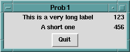
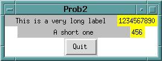
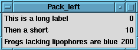
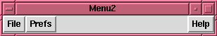

In essence, a geometry manager's job is to stuff what are known as, in X parlance, slave widgets inside a master widget. The topmost master widget in a Perl/Tk application is of course the MainWindow. In the simplest case it's the only master, but usually we need to employ one or more frames within which more slaves are packed. Once the slaves in these frames have been arranged, the frames themselves are laid out within the MainWindow.
This means that in order to calculate the final look of an application, geometry information propagates outwards from the innermost masters to the MainWindow. We'll see why and how to defeat this behavior later.
Before any widget can appear on the display it must be managed by a geometry manager. There can actually be multiple geometry managers controlling an application, although a widget can only be managed by one geometry manager at a time.
The Perl/Tk distribution contains at least four geometry managers: place, pack, Tk::Table and grid, but we'll only discuss the "packer" and the "gridder" this time. As its name suggests, the grid geometry manager places widgets in rows and columns inside a master. But why include the packer in a gridder discussion? The answer to that question begins innocently enough, with a simple pack problem posted to the Perl/Tk mailing list.* After comparing equivalent pack and grid programs, we'll see that the gridder provides a simpler solution for this particular problem.
Here's the task at hand:
"I'm having a problem understanding how 'anchor' is working. My current problem is: I want to display a list of names in one column and a list of numbers in a second column. I want the names to be left justified and the numbers to be right justified. I have tried playing with the 'anchor' and 'width' mechanisms, but with no success."
This code sample (prob1 on the TPJ site) represents the poster's valiant attempt:
#!/usr/bin/perl -w
use Tk;
use strict;
my $MW = MainWindow->new;
my $f1 = $MW->Frame->pack;
my $f2 = $MW->Frame->pack;
$f1->Label(-text => 'This is a very long label', -width => 30)
->pack(-side => 'left', -anchor => 'w');
$f1->Label(-text => 123)->pack(-side => 'left');
$f2->Label(-text => 'A short one', -width => 30)
->pack(-side => 'left', -anchor => 'w');
$f2->Label(-text => 456)->pack(-side => 'left');
$MW->Button(-text => 'Quit', -command => ['destroy', $MW])
->pack(-side => 'bottom');
MainLoop;
The names are packed left and anchored west, which seems reasonable. Packing the numbers left as well looks dubious, but let's see what happens when the code is run:

Figure 1: Prob 1
Surprisingly, the names are not left justified, but appear to be centered, and the numbers, which we thought might be left justified, seem to be right justified! Something must be amiss. To figure out what's going on, consider these tips:
Here is a slightly modified version of the first program (program prob2). The changed lines are highlighted in bold.
#!/usr/bin/perl -w
use Tk;
use strict;
my $MW = MainWindow->new;
$MW->configure(-bg => 'white');
$MW->optionAdd('*font' => 'fixed');
my $f1 = $MW->Frame->pack;
my $f2 = $MW->Frame->pack;
$f1->Label(-text => 'This is a very long label',
-width => 30, -bg => 'gray')
->pack(-side => 'left', -anchor => 'w');
$f1->Label(-text => 1234567890, -bg => 'yellow')
->pack(-side => 'left');
$f2->Label(-text => 'A short one', -width => 30,
-bg => 'gray')
->pack(-side => 'left', -anchor => 'w');
$f2->Label(-text => 456, -bg => 'yellow')
->pack(-side => 'left');
$MW->Button(-text => 'Quit',
-command => ['destroy', $MW])->pack;
MainLoop;
Most of the changes just implement the three tips listed, with the exception of the last one: by default the packer arranges a master's slave widgets from top to bottom, so -side => 'bottom' is superfluous. Because I'm lazy, I used optionAdd() to change the X11 resource database so that all widgets use the default font "fixed". Executing our newly instrumented program reveals this:

Figure 2: Prob 2
First note that the numbers are allocated an area just large enough to contain them, which is the default pack action, sometime called "shrink-wrapping." Next, note that the names are allocated a space 30 characters wide (because that's what we requested) and the label text is centered - again, the default pack action. Remember, the packer likes to shrink-wrap and center widgets unless you specify otherwise. So, the two container frames are assigned the minimum required space and centered in their master, the MainWindow - that's why unused space is equally apportioned on either side of the bottom frame.
This exercise will clarify things. Make a copy of program prob2. Name it, say, prob3, and observe:
Program prob3 should look similar to this simple solution (program pack), which solves the poster's problem in a slightly different way:
#!/usr/bin/perl -w
#
# Create two columns of data: left-adjusted text
# labels and right-adjusted numbers. Each row consists
# of a frame with two labels packed on opposite
# sides. The packer fills unused space in the
# X-dimension so that all frames are the same length
# (that of the widest frame).
use English;
use Tk;
use strict;
my $MW = MainWindow->new;
my @text = ('This is a long label', 'Then a short',
'Frogs lacking lipophores are blue');
my($i, $w, $f) = (0, undef, undef);
foreach (@text) {
$f = $MW->Frame->pack(-fill => 'x');
$w = $f->Label(-text => $ARG);
$w->pack(-side => 'left');
$w = $f->Label(-text => $i . '0' x $i);
$w->pack(-side => 'right');
$i++;
}
MainLoop;
The program's output:

Figure 3: Pack_left
The corresponding code using the grid geometry manager (program grid) produces an identical display. Unlike the rest of Tk, grid elements are referenced by row (Y coordinate) and column (X coordinate), starting from 0 at the top-left corner of the master widget.
#!/usr/bin/perl -w
#
# Create two columns of data: left-adjusted text
# labels and right-adjusted numbers. Each row
# consists of two labels managed by the gridder,
# which are "stuck" to opposite sides of their
# respective column. The gridder fills unused space
# in the east-west direction so that all rows are
# the same length -- that of the widest row.
use English;
use Tk;
use strict;
my $MW = MainWindow->new;
my @text = ('This is a long label',
'Then a short',
'Frogs lacking lipophores are blue');
my ($i, $w) = (0, undef);
foreach (@text) {
$w = $MW->Label(-text => $ARG);
$w->grid(-row => $i, -column => 0, -sticky => 'w');
$w = $MW->Label(-text => $i . '0' x $i);
$w->grid(-row => $i, -column => 1, -sticky => 'e');
$i++;
}
MainLoop;
The obvious difference is that here we define a grid, with three rows and two columns. -sticky replaces pack's -anchor and -fill attributes, so it's easy to west-align names in column zero and east-align numbers in column one. Also, we've dispensed with all the row frames required with the pack model.
As a more exhaustive test drive of the gridder, let's look at an implementation of 15-puzzle, a game where you try to arrange 15 numbered buttons in sequence. If you don't know what I'm talking about, try out the demo in the Tk widget program bundled with the Perl/Tk distribution. (15-puzzle uses the place geometry manager, in case you're interested.)
This version of 15-puzzle is called npuz because it's not limited to a 4x4 square; you can choose n, the length of a side, from the set (3, 4, 6, 8). To make the puzzle more difficult, the numbered squares have been replaced with segments of an image: the official Perl/Tk icon, who we all know as Camelus bactrianus.
Figure 4: Npuz - Camelus Bactrianus
The grid geometry manager is well suited for this problem, not only for the initial layout of the puzzle, but also for moving the pieces. When a new game starts, the pieces are randomized. Then each is assigned an image and gridded, with one piece becoming the "space piece." Moving a piece simply involves exchanging it with the space, which entails a call to grid() to swap the row and column coordinates.
Here's simp, a tiny program that gives you a feel for what npuz does:
#!/usr/bin/perl -w
#
# simp (simple_puz) - randomly grid 15
# buttons and a space in a 4x4 rectangle.
use English;
use Tk;
use strict;
use subs qw(create_puz xy);
my $MW = MainWindow->new;
my $PIECES = 16;
my $SIDE = sqrt $PIECES;
my @ORDER =
(3, 1, 6, 2, 5, 7, 15, 13, 0, 4, 11, 8, 9, 14, 10, 12);
create_puz;
MainLoop;
sub create_puz {
my($i, $text, $num, $but, $c, $r);
for($i = 0; $i <= $PIECES-1; $i++) {
$num = $ORDER[$i];
$text = ($num == 0) ? 'Space' : $num;
$but = $MW->Button(-text => $text,
-command => [$MW => 'bell']);
($c, $r) = xy $i;
$but->grid(-column => $c, -row => $r,
-sticky => 'nsew');
} # forend all puzzle pieces
} # end create_puz
sub xy { # ordinal to X/Y
my($n) = @ARG;
($n % $SIDE, int $n / $SIDE)
}
For simplicity, think of the puzzle pieces as a linear list rather than a two dimensional array. So for n = 4, the pieces are numbered from 0 to 15, with piece 0 as the space. To position a piece we just need to convert a puzzle ordinal to a row/column pair - that's what subroutine xy does - and then grid it. The @ORDER list in effect shuffles the pieces so the game doesn't start already solved. (Perhaps @ORDER isn't an appropriate variable name, since the end result is to increase the game's entropy, or add disorder to it.)
Running simp creates the following:
Figure 5: Simp
The -sticky => 'nsew' attribute is analogous to the packer's -fill => 'both', and ensures that all buttons completely fill their allocated space. Notice that grid column zero is wider than the other columns. This is because the gridder assigns the column a width equal to that of the widest button - the button labeled "Space." Rerun this program without -sticky and you'll see the difference. But this won't be a problem for npuz since all the buttons have images of identical size.
Three changes to simp will give us npuz:
Since we think of the puzzle pieces as a list, we'll store the widget references in an array: @PUZ. The grid geometry manager obviously knows the location of all its slave widgets so npuz can simply ask the gridder for this data.
This npuz code is analogous to simp. A few lines have been excerpted from other areas of the program and included here for completeness.
$CAMEL = $MW->Photo(-file => 'images/Xcamel.npuz');
# create puzzle frame grid master
$PF = $MW->Frame->grid;
my($i, $o, $c, $r, $w, $h, $x, $y, $but, $gif);
for($i = 0; $i <= $#PUZ; $i++) {
$o = $ORDER[$i]->[0];
($c, $r) = xy $o; # puzzle ordinal to column/row
$w = $CAMEL->image('width') / $SIDE;
$h = $CAMEL->image('height') / $SIDE;
$x = $c * $w; # x/column pixel offset
$y = $r * $h; # y/row pixel offset
$gif = $PF->Photo; # new, empty, GIF image
$gif->copy($CAMEL, -from => $x, $y, $x+$w, $y+$h);
$but = $PF->Button(-image => $gif, -relief => 'flat',
-borderwidth => 0,
-highlightthickness => 0);
$PUZ[$o] = $but;
($c, $r) = xy $i;
$but->grid(-column => $c, -row => $r,
-sticky => 'nsew');
$but->configure(-command => [\&move_piece, $but]);
} # forend all puzzle pieces
The first statement creates a Photo object of our friendly camel. Like Tk objects, a Photo object has methods to manipulate it, which we'll use to create smaller rectangular photos from the main image. These new photos are then assigned to the game buttons.
Notice that frames are still used as containers with the gridder. Here the puzzle frame $PF, a slave of the MainWindow, is the grid master for the puzzle. (There's another MainWindow slave frame that holds the npuz menubar, but I'll talk about that later.)
Once a puzzle ordinal is selected, we can use its row and column position, along with the width and height of a puzzle piece, to compute a bounding box that defines a sub-region of the main camel image. Then an empty photo is created and populated with the image sub-region using the copy() method, which copies from the source image $CAMEL to the new image $gif (It's important to note that when you're finished with an image you must explicitly delete it. Images don't magically go away just because a widget that happens to use it is destroyed. After all, several widgets might be sharing the same image. To prevent a memory leak when a new game is started and all previous buttons are deleted, we first delete all their images:
foreach (@PUZ) {$ARG->cget(-image)->delete}
).
After updating @PUZ with the new button, the piece is gridded and a callback to move_piece() is created, passing $piece, a reference to the button. Pushing a button invokes it.
foreach (@PUZ) {$ARG->cget(-image)->delete}
sub move_piece {
my($piece) = @ARG;
my(%info, $c, $r, $sc, $sr);
%info = $piece->gridInfo;
($c, $r) = @info{-column,-row};
%info = $SPACE->gridInfo;
($sc, $sr) = @info{-column,-row};
if (($sr == $r and ($sc == $c-1 or $sc == $c+1)) or
($sc == $c and ($sr == $r-1 or $sr == $r+1))) {
$SPACE->grid(-column => $c, -row => $r);
$piece->grid(-column => $sc, -row => $sr);
}
} # end move_piece
A call to gridinfo() returns a hash of grid configuration information. The hash keys are the same as the attributes you can give to a grid()( (or gridConfigure()) command, like -column and -row. It's a simple matter to take a slice of this hash, check to see if the puzzle piece is directly north, south, east or west of the space, and if so, swap their grid locations.
As you can see, choosing the grid geometry manager for this problem greatly simplified the programming. The packer could be used, with a lot of bookkeeping and packForgeting, but the experience would not be pleasant! The placer is the second best choice, but you'd have to maintain button coordinates manually, so @PUZ would be a list of list of three:
$PUZ[$ordinal] = [$column, $row, $but].
You can grid menubars easily as well. Here's an example that doesn't work:
#!/usr/bin/perl -w
#
# menu1 - first attempt at gridding a menubar.
use Tk;
use strict;
my $MW = MainWindow->new;
my $mf = $MW->Frame->grid;
my $PF = $MW->Frame(-width => 300)->grid;
my $mbf = $mf->Menubutton(-text => 'File',
-relief => 'raised');
my $mbp = $mf->Menubutton(-text => 'Prefs',
-relief => 'raised');
my $mbq = $mf->Menubutton(-text => 'Help',
-relief => 'raised');
$mbf->grid(-row => 0, -column => 0, -sticky => 'w');
$mbp->grid(-row => 0, -column => 1, -sticky => 'w');
$mbq->grid(-row => 0, -column => 2, -sticky => 'e');
MainLoop;
The frame $PF represents the puzzle frame, and artificially fixes the width of the application's display to 300 pixels. I did this so there's unused space for the menubuttons to move about in to help illustrate gridder mechanics. The goal in this example is to grid the File and Prefs menubuttons side by side west, the Help menubutton east, with unused space in the center of the frame. Instead, this is the result:
Figure 6: Menu 1
Like the packer, the default grid action is to shrink-wrap the menubar frame around the three menubuttons and center it in the 300 pixel allocated space. We'll need two small changes to achieve the effect shown below.

Figure 7: Menu 2
First, the menubar row needs to be east-west sticky:
my $mf = $MW->Frame->grid(-sticky => 'ew');
By itself, this change doesn't make any difference in the geometry arrangement because the three grid columns containing the menubuttons have no weight. Without weight, a grid column (or row) can not be apportioned unallocated space. We can arrange for menubar column 1 (the Prefs menubutton) to get all the unused space in the frame like this:
$mf->gridColumnconfigure(1, -weight => 1);
The -weight attribute is a relative value, and because the other columns are weightless, the Prefs column gets 100% of the unallocated space. It's important that Prefs be west sticky, but the other two columns don't need to be sticky at all, since they get no unused space. Although the current version of grid accepts floating point weight values, the next one will not, so always use integers.
Sometimes you'll want to disable the outward propagation of geometry configuration information. For instance, suppose you want to manage a frame of a particular size, and within the frame pack or grid other widgets. This example grids a frame with an embedded button but prevents the gridder from shrink-wrapping the frame around the button:
#!/usr/bin/perl -w
# Remove the gridPropagate() statement
# to shrink-wrap the display.
use Tk;
use strict;
my $MW = MainWindow->new;
my $f = $MW->Frame(-width => 200,
-height => 100) ;
$f->gridPropagate(0);
$f->Button(-text => 'To shrink or not to shrink',
-command => \&exit)->grid;
MainLoop;
There's a packer analog too: packPropagate().
That wraps up my grid introduction. Be sure to read the grid HTML documentation in the Perl/Tk distribution for further details. I'll see you back here for the first anniversary of The Perl Journal.
__END__
{kind=link}
{kind=link}